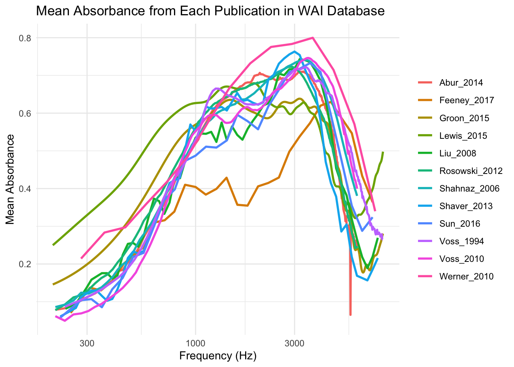
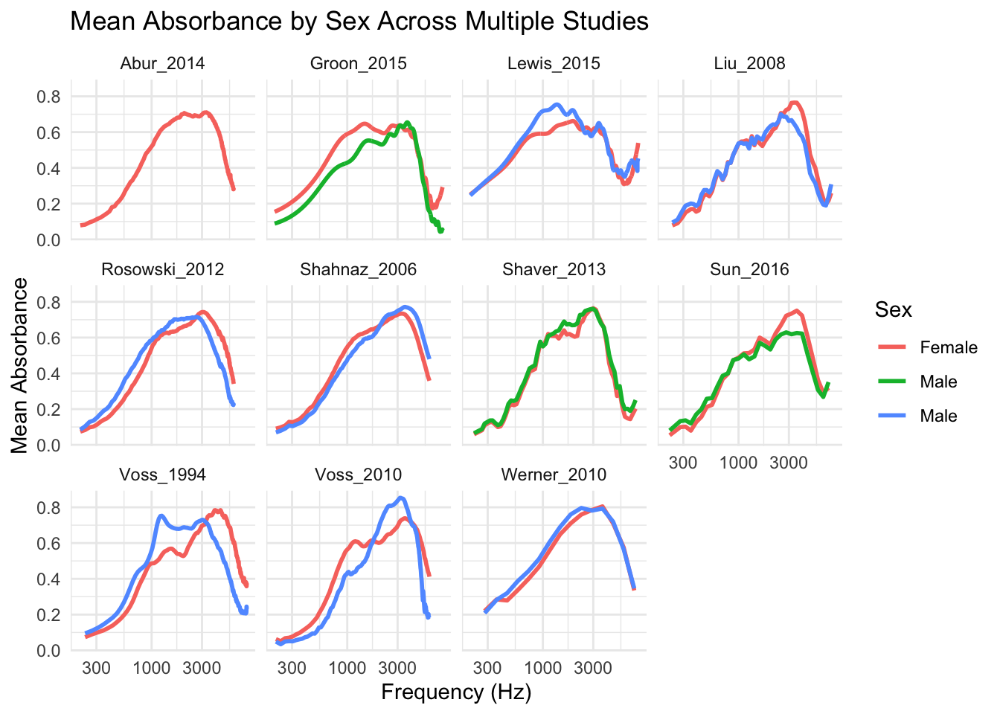

Step 1: Establish Connection with the Datasbase Host
Plan:
Use SQL to query the Measurements table and filter for the 12 studies mentioned in Figure 1. Specifically, extract the Frequency and Absorbance fields.
Calculate the mean absorbance for each study grouped by frequency. If multiple measurements exist for the same ear, average those first before aggregating across subjects.
Use the COUNT(DISTINCT SubjectNumber, Ear) SQL query to compute the number of unique ears for each study.
Build the labels (e.g., “Abur et al. (2014) N=14; HearID”) using the GROUP BY Identifier, Instrument.
SQL Query:
library(dplyr)
Attaching package: 'dplyr'
The following objects are masked from 'package:stats':
filter, lag
The following objects are masked from 'package:base':
intersect, setdiff, setequal, union
query_figure1 <-"SELECT m.Identifier, m.Instrument, COUNT(DISTINCT CONCAT(m.SubjectNumber, m.Ear)) AS Unique_Ears, -- Count unique ears m.Frequency, AVG(m.Absorbance) AS Mean_AbsorbanceFROM Measurements mWHERE m.Identifier IN ('Abur_2014', 'Feeney_2017', 'Groon_2015', 'Lewis_2015', 'Liu_2008', 'Rosowski_2012', 'Shahnaz_2006', 'Shaver_2013', 'Sun_2016', 'Voss_1994', 'Voss_2010', 'Werner_2010') AND m.Frequency > 200 -- Filter relevant frequencies AND m.Frequency < 8000 -- Align with the x-axis scaleGROUP BY m.Identifier, m.Instrument, m.FrequencyORDER BY m.Identifier, m.Frequency;"
Plotting the Data:
# Query for Figure 1data_figure1 <-dbGetQuery(con_wai, query_figure1)# Plot the datalibrary(ggplot2)ggplot(data_figure1, aes(x = Frequency, y = Mean_Absorbance, color = Identifier)) +geom_line(linewidth =1) +scale_x_log10() +# Log scale for frequencylabs(title ="Mean Absorbance from Each Publication in WAI Database",x ="Frequency (Hz)",y ="Mean Absorbance" ) +theme_minimal() +theme(legend.title =element_blank())

Alt Text for the Plot:
A line plot showing the mean absorbance values across different frequencies (in Hz) for various publications in the WAI database. The x-axis represents the frequency ranging from approximately 100 Hz to 4000 Hz, and the y-axis represents the mean absorbance values, ranging from 0 to 0.8. Each line corresponds to a different publication, identified by the legend on the right, with distinct colors representing each study. The plot shows variations in absorbance curves among the publications, with some exhibiting peaks and troughs at different frequencies.
Description of the Plot
This plot visualizes the mean absorbance across frequencies for 12 studies from the Wideband Acoustic Immittance (WAI) Database. Each line represents a unique study, identified in the legend by the author name, year, and instrument type. Here’s a breakdown of its components:
X-Axis (Frequency):
Represents the frequency range, plotted on a logarithmic scale from approximately 200 Hz to 8000 Hz.
This scale allows for better visualization of frequency-dependent trends over a wide range of values.
Y-Axis (Mean Absorbance):
Represents the mean absorbance values, ranging from 0.1 to 0.8.
Absorbance is a measure of how much sound energy is absorbed by the ear canal and middle ear system, averaged across all subjects and measurements for a given frequency in each study.
Legend:
Each study is uniquely identified in the legend by the author (shortened), publication year, and the instrument used for data collection.
Example: “Feeney_2017” corresponds to a study by Feeney published in 2017.
Observations:
The curves generally rise sharply from low frequencies (~200 Hz), peak around the mid-range frequencies (1000–3000 Hz), and then decline at higher frequencies.
Some studies (e.g., Groon_2015 and Werner_2010) exhibit smoother curves, while others show variations or dips, indicating potential differences in instrumentation, measurement techniques, or subject demographics.
Purpose:
The plot provides a comparative overview of mean absorbance trends across studies, highlighting the similarities and differences in ear acoustic properties measured under different experimental setups.
Conclusion & Summary of the Analysis
The goal of this project was to analyze the Wideband Acoustic Immittance (WAI) database to recreate Figure 1 from the Voss (2020) paper and conduct a group-based analysis of absorbance data (e.g., by age categories). Here’s a step-by-step breakdown of what we accomplished:
1. Setting Up the Database Connection
Connected to the WAI database hosted at Smith College using the RMariaDB package in R.
Retrieved data from three primary tables: Measurements, Subjects, and PI_Info.
Validated the connection by exploring the database schema (e.g., using SHOW TABLES and DESCRIBE commands).
2. Recreating Figure 1
Key Insights from Figure 1’s Caption:
Mean absorbance for each study was calculated across all ears, considering both left and right ear measurements.
Studies were grouped by Identifier and Instrument, and unique ears were counted for each study.
SQL Query for Data Retrieval:
Filtered for the 12 specific studies mentioned in Figure 1.
Restricted frequencies to the range [200 Hz, 8000 Hz] to match the original plot.
Averaged absorbance measurements for each frequency after combining left and right ears.
Counted unique ears using COUNT(DISTINCT CONCAT(SubjectNumber, Ear)).
Plotting:
Used ggplot2 to recreate the log-scaled x-axis and show mean absorbance curves for each study.
Customized the legend to include study details (e.g., year, instrument type).
3. Group-Based Analysis (Age Categories)
Objective:
Analyze how absorbance changes across frequencies for different age groups (e.g., Adult, Child, Infant).
SQL Query:
Joined Measurements and Subjects tables to link frequency/absorbance data with demographic data.
Grouped data by AgeCategoryFirstMeasurement and Frequency.
Filtered out NULL values in age categories.
Plotting:
Visualized mean absorbance for each frequency, with separate lines for each age category.
Used a log-scale for the x-axis (frequency) and restricted the y-axis to valid absorbance ranges.
Part 2
Plan:
The goal was to analyze how mean absorbance varies across frequencies for different sex groups (Male and Female) across multiple studies. Here’s the step-by-step plan:
Identify Diverse Studies:
Query the Subjects table to find studies (Identifiers) that included at least two distinct sex groups (Male and Female) while excluding those dominated by Unknown.
Ensure the selected studies had sufficient valid data (i.e., meaningful counts for Male and Female groups).
Filter and Aggregate Data:
Using SQL, filter the Measurements and Subjects tables for the selected studies.
Exclude Unknown values for Sex, restrict frequencies to a meaningful range (200 Hz to 8000 Hz), and ensure absorbance values were valid.
Calculate the mean absorbance for each frequency within each sex group (Male or Female) for each study.
Fetch the Data into R:
Execute the SQL query in R to retrieve the aggregated data.
Preview the data to ensure it included the required fields: Identifier, GroupName (Sex), Frequency, and Mean_Absorbance.
Visualize the Results:
Use ggplot2 to create a log-scaled plot of mean absorbance against frequency for Male and Female groups.
Separate the data by study (Identifier) using facets to allow comparison of trends across multiple studies.
Dynamic Extension:
Ensure the workflow could dynamically include additional studies by simply updating the list of Identifiers in the SQL query.
Step 1: Inspect the Data
We’ll query the Subjects table to find studies (Identifier) that include multiple Sex groups (e.g., Male and Female) and exclude those dominated by Unknown.
SQL Query to Inspect Distribution:
SELECTIdentifier,COUNT(*) AS Total_Subjects,COUNT(DISTINCT Sex) AS Sex_Groups,SUM(CASEWHEN Sex ='Unknown'THEN1ELSE0END) AS Unknown_CountFROM SubjectsGROUPBYIdentifierHAVING Sex_Groups >1AND (Total_Subjects - Unknown_Count) >0; -- Ensure diversity
Displaying records 1 - 10
Identifier
Total_Subjects
Sex_Groups
Unknown_Count
Aithal_2013
66
2
0
Aithal_2014
96
2
0
Aithal_2014b
184
2
0
Aithal_2015
141
2
0
Aithal_2017a
203
2
0
Aithal_2017b
58
2
0
Aithal_2019a
111
2
0
Aithal_2019b
99
2
0
Aithal_2020a
71
2
0
Aithal_2020b
109
2
0
# SQL query to find identifiers with diverse Sex groupsquery_diverse_studies <-"SELECT Identifier, COUNT(*) AS Total_Subjects, COUNT(DISTINCT Sex) AS Sex_Groups, SUM(CASE WHEN Sex = 'Unknown' THEN 1 ELSE 0 END) AS Unknown_CountFROM SubjectsGROUP BY IdentifierHAVING Sex_Groups > 1 AND (Total_Subjects - Unknown_Count) > 0;"# Execute the querydiverse_studies <-dbGetQuery(con_wai, query_diverse_studies)# Preview the diverse studiesprint(diverse_studies)
Now that we have a list of diverse studies, let’s calculate mean absorbance across frequencies for all of them.
SQL Query:
SELECT m.Identifier, -- Include study identifier s.Sex AS GroupName, -- Group by Sex m.Frequency, -- Frequency in HzAVG(m.Absorbance) AS Mean_Absorbance -- Average absorbanceFROM Measurements mJOIN Subjects s ON m.SubjectNumber = s.SubjectNumberAND m.Identifier= s.IdentifierWHERE m.IdentifierIN ('Abur_2014', 'Feeney_2017', 'Groon_2015', 'Lewis_2015', 'Liu_2008', 'Rosowski_2012', 'Shahnaz_2006', 'Shaver_2013', 'Sun_2016', 'Voss_1994', 'Voss_2010', 'Werner_2010') AND m.Frequency >200-- Restrict frequencies to valid rangeAND m.Frequency <8000AND m.Absorbance >=0-- Exclude invalid absorbance valuesAND s.Sex IN ('Male', 'Female') -- Exclude Unknown valuesGROUPBY m.Identifier, s.Sex, m.Frequency -- Group by Identifier, Sex, and FrequencyORDERBY m.Identifier, s.Sex, m.Frequency;
Displaying records 1 - 10
Identifier
GroupName
Frequency
Mean_Absorbance
Abur_2014
Female
210.938
0.0784746
Abur_2014
Female
234.375
0.0826420
Abur_2014
Female
257.812
0.0948482
Abur_2014
Female
281.250
0.1031472
Abur_2014
Female
304.688
0.1137576
Abur_2014
Female
328.125
0.1221205
Abur_2014
Female
351.562
0.1334329
Abur_2014
Female
375.000
0.1447725
Abur_2014
Female
398.438
0.1563874
Abur_2014
Female
421.875
0.1806973
Step 3: Fetch Data in R
Run the query and fetch the results into R:
# SQL query for multiple identifiersquery_sex_absorption_multiple <-"SELECT m.Identifier, s.Sex AS GroupName, m.Frequency, AVG(m.Absorbance) AS Mean_AbsorbanceFROM Measurements mJOIN Subjects s ON m.SubjectNumber = s.SubjectNumber AND m.Identifier = s.IdentifierWHERE m.Identifier IN ('Abur_2014', 'Feeney_2017', 'Groon_2015', 'Lewis_2015', 'Liu_2008', 'Rosowski_2012', 'Shahnaz_2006', 'Shaver_2013', 'Sun_2016', 'Voss_1994', 'Voss_2010', 'Werner_2010') AND m.Frequency > 200 AND m.Frequency < 8000 AND m.Absorbance >= 0 AND s.Sex IN ('Male', 'Female')GROUP BY m.Identifier, s.Sex, m.FrequencyORDER BY m.Identifier, s.Sex, m.Frequency;"# Fetch resultsdata_sex_absorption_multiple <-dbGetQuery(con_wai, query_sex_absorption_multiple)# Preview the datahead(data_sex_absorption_multiple)
Visualize the absorbance trends for multiple studies:
ggplot(data_sex_absorption_multiple, aes(x = Frequency, y = Mean_Absorbance, color = GroupName)) +geom_line(size =1) +facet_wrap(~ Identifier) +# Create separate plots for each studyscale_x_log10() +# Log scale for frequencylabs(title ="Mean Absorbance by Sex Across Multiple Studies",x ="Frequency (Hz)",y ="Mean Absorbance",color ="Sex" ) +theme_minimal()
Warning: Using `size` aesthetic for lines was deprecated in ggplot2 3.4.0.
ℹ Please use `linewidth` instead.

Alt Text for the Plot:
A grid of line plots comparing mean absorbance values by sex across multiple studies. Each subplot represents a study, with the x-axis showing frequency in Hz (ranging from 300 to 3000 Hz) and the y-axis showing mean absorbance values (ranging from 0 to 0.8). The lines are color-coded by sex: red for female, green for male in some studies, and blue for male in others. The legend on the right associates the colors with sex categories. Differences in absorbance trends between males and females are visible, with variations across the individual studies such as ‘Abur_2014,’ ‘Voss_1994,’ and ’Werner_2010.
Description of the Plot
This plot visualizes the mean absorbance across frequencies for Male and Female participants across multiple studies from the Wideband Acoustic Immittance (WAI) Database. The studies are displayed as individual facets, allowing for a comparative analysis of trends by sex within each study. Here’s a detailed breakdown:
Faceted Layout (Studies):
Each facet represents a study identified by the author name and publication year (e.g., Abur_2014, Groon_2015).
This layout enables a side-by-side comparison of sex-based trends across different studies.
X-Axis (Frequency):
Frequency is plotted on a logarithmic scale (300 Hz to 8000 Hz), emphasizing differences across a wide range of frequencies.
Y-Axis (Mean Absorbance):
Mean absorbance values range from 0.0 to 0.8.
Absorbance represents the proportion of sound energy absorbed by the ear canal and middle ear system.
Color-Coded Lines:
Red: Absorbance trends for Female participants.
BlueorGreen: Absorbance trends for Male participants.
The colors indicate how absorbance varies between sexes across different frequencies within each study.
Key Observations:
General Trends:
Across most studies, the absorbance rises sharply at low frequencies, peaks in the mid-range (around 1000–3000 Hz), and gradually declines at higher frequencies.
Sex Differences:
Many studies show overlapping trends between Male and Female, but some (e.g., Lewis_2015, Shaver_2013) show slight differences in mid-to-high frequency ranges.
For some studies (e.g., Liu_2008, Shahnaz_2006), Female participants exhibit slightly higher absorbance at certain frequencies, whereas others show the reverse pattern.
Variability Across Studies:
Certain studies (e.g., Shaver_2013, Groon_2015) exhibit more pronounced differences between sexes compared to others (e.g., Abur_2014, Werner_2010).
Purpose:
The plot aims to highlight how sex influences mean absorbance trends across different studies and frequencies, revealing potential patterns and variability in auditory measurements.
Summary Conclusion
The analysis successfully identified multiple studies with sufficient diversity in sex groups and calculated mean absorbance values across frequencies for Male and Female participants. The SQL-centric approach ensured that all filtering, grouping, and aggregation were performed efficiently within the database, minimizing processing in R.
The visualization provided insights into absorbance trends by sex for each study, showing distinct patterns in absorbance levels across different frequencies. This approach is scalable to include additional studies or alternative demographic groups (e.g., Race or Ethnicity), making it flexible for broader analyses.
Sources of the Data
Wideband Acoustic Immittance (WAI) Database:
The data used in this project is sourced from the WAI Database hosted by Smith College.
The database contains wideband acoustic immittance measurements from peer-reviewed publications, covering various studies aimed at noninvasive auditory diagnostics for people of all ages.
Specific Studies Included in the Analysis:
The following studies, as cited in the database, were included in the analysis:
Abur et al. (2014): HearID
Feeney et al. (2017): Not commercial system
Groon et al. (2015): Not commercial system
Lewis and Neely (2015): Not commercial system
Liu et al. (2008): Not commercial system
Rosowski et al. (2012): HearID
Shahnaz et al. (2006): HearID
Shaver and Sun (2013): Titan
Sun et al. (2016): Titan
Voss and Allen (1994): Not commercial system
Voss et al. (2010): HearID
Werner et al. (2010): Not commercial system
Data Access:
The database was accessed through the MySQL connection to the Smith College WAI database server using credentials provided for research purposes. All filtering, grouping, and aggregation operations were performed on the database directly.
Citation
Smith College WAI Database. (2024). Wideband Acoustic Immittance (WAI) Database [Database]. Smith College. Retrieved from the Smith College WAI Database server for research purposes.